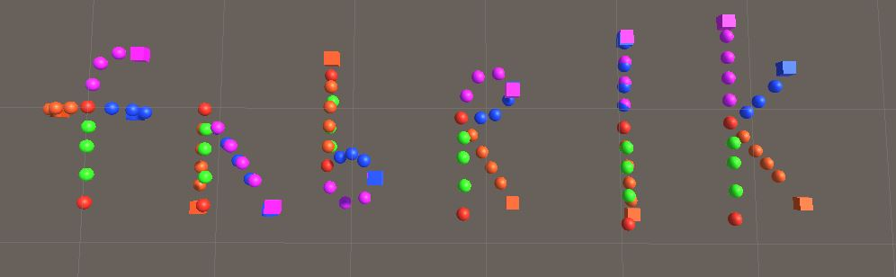

Project Details
Project Goal
The goal of this project was to demonstrate my understanding of the FABRIK inverse kinematic solver. FABRIK is an acronym for Forward And Backward Reaching Inverse Kinematics. Using this Heuristic method developed at the university of Cambridge, I can solve animation, graphical, and physics simulation problems with a very fast and lifelike method. The algorithm is so efficient due to the massive reduction in rotation and Matrix mathematics involved in other methods. Using this method it has been shown that we can solve 2D and 3D IK problems in a fraction of the time that other methods take. This method is also highly scalable and can be improved to accomidate mulitiple end effectors, as my system demontstates, as well more complex problems like constrained movement.
Challenges
While the algorithm itself involves relatively little code compared to other implementations of inverse Kinematics the largest challenge came with understanding the algorithm on a level where I am able to implement a feasible system in Unity. After reading the in-depth article and studying the pseudocode, I was able to get the basic algorithm implemented in about 2 afternoons. The real challenge in my understanding came when I began implementing multiple end effectors. This problem had me scratching my head for a couple days. After returning to the basics of the algorithm, breaking it apart piece by piece, and getting to know the individual sequences by heart, I was able to make an effective prototype of the Multiple end effector model of this algorithm.
Implementation
The uses of this algorithm are only limeted by the imagination of the designer using it. Some of the places I anticipate using this code in my other work is as an ambient setpiece in a 2D game I am developing. The chains of this fabrik model will sway as leaves, grass, vines, or seaweed in the fore and background to bring life to the game. With some more expansion, I am interested in creating a cloth simulation that runs very quickly. With more improvement to the system, I could even animate limbs and creatures in 3d games. When Contraints are added I will even be able to simulate VR limbs.